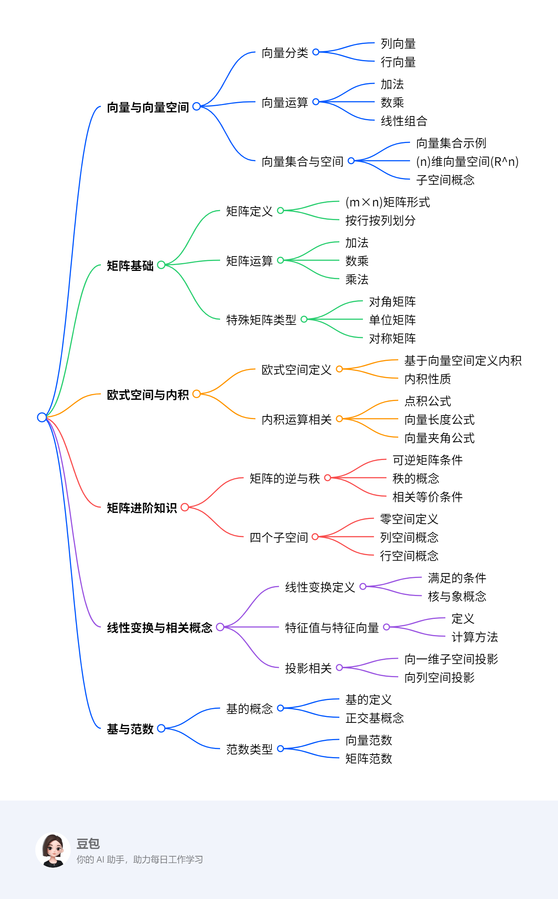
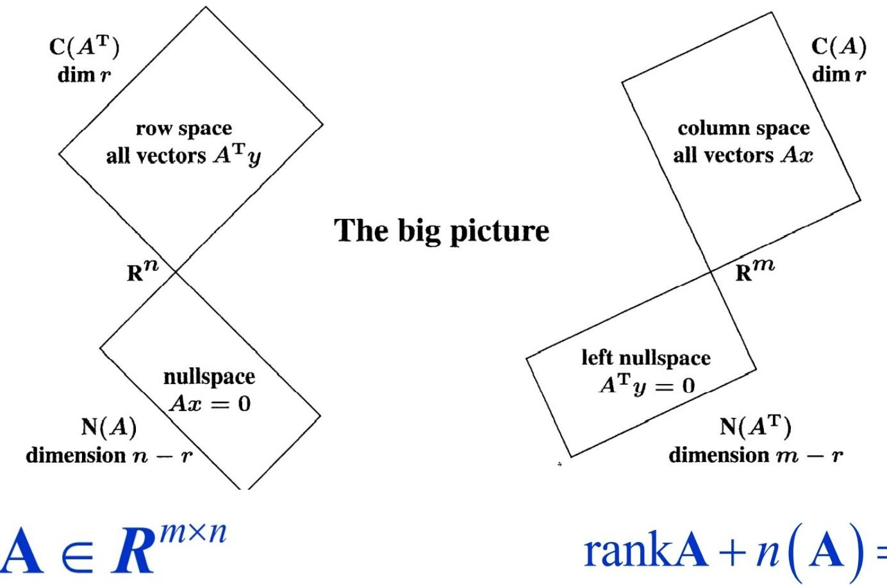

线代基础¶
概览¶
一段话总结¶
本文围绕线性代数展开，介绍向量与向量空间，包括向量运算、集合、子空间等；矩阵相关知识，如矩阵运算、特殊矩阵、逆与秩；欧式空间定义内积，可计算向量长度和夹角；矩阵乘法有多种理解方式；还涉及线性变换、特征值与特征向量、投影、基与正交基、范数等内容，这些知识在数据科学、神经网络等领域有重要应用。
思维导图¶
¶
详细总结¶
- 向量与向量空间
- 向量形式：向量分为列向量（如\(v=\begin{bmatrix}1\\2\\3\end{bmatrix}\) ）和行向量（如\(v=\begin{bmatrix}1&2&3\end{bmatrix}\) ），多数场合向量指列向量。
- 向量运算：包括加法、数乘，其任意组合为线性组合。如\(c v+d w=c\begin{bmatrix}1\\1\\0\end{bmatrix}+d\begin{bmatrix}0\\1\\1\end{bmatrix}=\begin{bmatrix}c\\c + d\\d\end{bmatrix}\) 。
- 向量集合与空间：向量集合有有限元素和无限元素的情况。\(n\)维向量空间\(R^n\)包含所有\(n\)个分量的向量。子空间由向量张成，如\(Span(v, w)=\{c v+d w|c, d\in R\}\) ，非空子集满足加法和数乘封闭则为子空间。
- 矩阵
- 矩阵概念：\(m×n\)矩阵\(A=(a_{ij})_{1\leq i\leq m,1\leq j\leq n}\) ，全体记为\(M_{m×n}(R)\) 或\(Mat_{m×n}(R)\) ，可按行或列划分成向量。
- 矩阵运算：加法需同型矩阵对应元素相加；数乘是数与矩阵各元素相乘；乘法有多种理解方式，如\((i, j)\)元素是A的第\(i\)行与B的第\(j\)列的内积，也可看作列或行的线性组合等。
- 特殊矩阵：有对角矩阵、单位矩阵、上（下）三角矩阵、零矩阵等，还有对称矩阵（\(A^T = A\) ）和反对称矩阵（\(A^T=-A\) ）。
- 欧式空间与内积
- 欧式空间定义：在实数域\(R\)上的线性空间\(V\)中定义满足交换率、齐次性、分配率和正定性的二元实函数\((x, y)\)为内积，定义了内积的\(V\)为欧氏空间。
- 内积相关运算：点积是内积的一种形式，\(v\cdot w = v_1w_1+\cdots + v_nw_n\) 。向量长度\(\|v\|=\sqrt{v\cdot v}\) ，夹角\(\theta\)满足\(\cos\theta=\frac{v\cdot w}{\|v\|\|w\|}\) ，\(v\)与\(w\)正交当且仅当\(v\cdot w = 0\) 。
- 矩阵的其他知识
- 矩阵的逆与秩：方阵\(A\)满足\(AA^{-1}=A^{-1}A = I_n\)时可逆，不可逆的矩阵为奇异矩阵。矩阵主元个数是秩\(r(A)\) ，\(A\)可逆、\(r(A)=n\) 、方程\(Ax = b\)有唯一解这三条等价。
- 四个子空间：零空间\(N(A)\)是\(Ax = 0\)的解集，是子空间；列空间\(Col A\)由列向量张成；行空间\(Row A\)由行向量张成；行空间与零空间互为正交补，且\(rank A + n(A)=n\) 。
- 线性变换等
- 线性变换：设\(V\)、\(W\)为\(R\)上向量空间，\(T:V\to W\)满足\(T(v_{1}+v_{2}) = T(v_{1})+T(v_{2})\) ，\(T(cv_{1}) = cT(v_{1})\) 时为线性映射。\(ker T=\{v\in V|T(v)=0_W\}\) ，\(Im(T)=\{T(v)|v\in V\}\) ，且\(dim V = dim ker(T)+dim Im(T)\) 。
- 特征值与特征向量：非零向量\(x\)满足\(Ax=\lambda x\)时，\(x\)是特征向量，\(\lambda\)是特征值。计算时先求特征多项式\(f_A(\lambda)=det(A-\lambda I)\)的根得到特征值，再求解\((A - \lambda I)x = 0\)得特征向量。
- 投影：向量向一维子空间或矩阵列空间投影，通过向量正交关系求解投影向量和投影矩阵。
- 基与正交基：向量空间\(V\)的子集满足向量线性无关且张成\(V\)时为基，基中向量数量是\(V\)的维数。相互正交且单位化的向量组构成标准正交基。
- 范数：向量范数满足非负性、齐次性和三角不等式，如1 - 范数\(\|x\|_1=\sum|x_i|\) ，2 - 范数\(\|x\|=\sqrt{(x, x)}\) 等；矩阵范数类似，且有与向量范数相容的概念和多种具体范数形式。
关键问题¶
- 线性相关和线性无关的向量组对张成子空间的维数有何影响？
- 若向量组\(v_1,\cdots,v_m\in R^n\)线性相关，那么\(dim Span(v_1,\cdots,v_m)<m\) ；若向量组线性无关，那么\(dim Span(v_1,\cdots,v_m)=m\) 。
- 如何判断一个矩阵是否可逆？
- 可以通过判断矩阵是否满足\(AA^{-1}=A^{-1}A = I_n\)来确定，若满足则可逆；也可看矩阵的秩，当\(r(A)=n\)时可逆；还可看对于任意\(b\in R^n\) ，方程\(Ax = b\)是否有唯一解，有则可逆。
- 向量范数和矩阵范数有哪些常见类型，它们的定义和性质是什么？
- 向量范数常见类型有1 - 范数\(\|x\|_1=\sum|x_i|\) ，2 - 范数\(\|x\|=\sqrt{(x, x)}\) ，\(\infty\) - 范数\(\|x\|=\max_i|x_i|\) 等，都满足非负性、齐次性和三角不等式。矩阵范数常见类型有Frobenius范数\(\|A\|_F=(\sum_{i = 1}^{n}\sum_{j = 1}^{n}|a_{ij}|^{2})^{\frac{1}{2}}\) ，列和范数\(\|A\|_1=\max_j\{\sum_{i = 1}^{m}|a_{ij}|\}\) 等，满足正定条件、齐次条件、三角不等式，部分还满足相容条件。
向量空间与向量¶
向量的基本概念¶
向量分为列向量和行向量，多数场合向量指列向量。向量中的成员是分量，如向量\(v=\begin{bmatrix}1\\2\\3\end{bmatrix}\)，\(v_1 = 1\)，\(v_2 = 2\)，\(v_3 = 3\) 。当向量分量少于四个时可可视化。
向量运算¶
向量有加法和数乘运算，二者的任意组合是线性组合。例如对于向量\(v=\begin{bmatrix}1\\1\\0\end{bmatrix}\) ，\(w=\begin{bmatrix}0\\1\\1\end{bmatrix}\) ，线性组合\(cv + dw = c\begin{bmatrix}1\\1\\0\end{bmatrix}+d\begin{bmatrix}0\\1\\1\end{bmatrix}=\begin{bmatrix}c\\c + d\\d\end{bmatrix}\) 。
向量集合与向量空间¶
向量集合可以包含有限个或无限个元素，如包含四个元素的向量集合\(\left\{\begin{bmatrix}1\\2\\3\end{bmatrix},\begin{bmatrix}4\\5\\6\end{bmatrix},\begin{bmatrix}6\\8\\9\end{bmatrix},\begin{bmatrix}9\\0\\2\end{bmatrix}\right\}\) ，以及包含无限个元素的向量集合\(\mathcal{L}=\left\{\begin{bmatrix}x_{1}\\x_{2}\end{bmatrix}: x_{1}+x_{2}=1\right\}\) 。\(n\)维向量空间\(R^n\)包含所有有\(n\)个分量的向量，如\(R^2\)包含所有两个分量的向量。
相关性与子空间的维数¶
- 相关性：向量\(v_{1},\cdots,v_{m} \in \mathbb{R}^{n}\)，若存在不全为零的\(c_{1},\cdots,c_{m}\)使得\(c_{1}v_{1}+\cdots + c_{m}v_{m}=0\)，则线性相关；若仅当\(c_{1}=\cdots = c_{m}=0\)时\(c_{1}v_{1}+\cdots + c_{m}v_{m}=0\)成立，则线性无关。
- 子空间的维数：\(W\)是\(\mathbb{R}^{n}\)的子空间，\(W\)中极大线性无关组的个数是\(W\)的维数。\(W\)的一组极大无关组是该空间的基，也是能张成该空间所需最少的线性无关向量。例如，对于向量组\(v_1=\begin{bmatrix}1\\0\end{bmatrix}\) ，\(v_2=\begin{bmatrix}0\\1\end{bmatrix}\) ，\(v_3=\begin{bmatrix}1\\1\end{bmatrix}\) ，判断其相关性：设\(c_1v_1 + c_2v_2 + c_3v_3 = 0\)，即\(c_1\begin{bmatrix}1\\0\end{bmatrix}+c_2\begin{bmatrix}0\\1\end{bmatrix}+c_3\begin{bmatrix}1\\1\end{bmatrix}=\begin{bmatrix}c_1 + c_3\\c_2 + c_3\end{bmatrix}=\begin{bmatrix}0\\0\end{bmatrix}\) ，得到方程组\(\begin{cases}c_1 + c_3 = 0\\c_2 + c_3 = 0\end{cases}\) ，令\(c_3 = 1\)，则\(c_1 = -1\)，\(c_2 = -1\)，存在不全为零的解，所以向量组线性相关 。而向量组\(v_1=\begin{bmatrix}1\\0\end{bmatrix}\) ，\(v_2=\begin{bmatrix}0\\1\end{bmatrix}\)线性无关，它们是\(R^2\)的一组基，\(R^2\)的维数是2。
矩阵¶
矩阵的定义¶
矩阵是向量的集合，对于\(m,n\in \mathbb{Z}_{\geq1}\)，\(m×n\)矩阵\(A\)的形式为\(A=\begin{bmatrix}a_{11}&\cdots&a_{1n}\\\vdots&\cdots&\vdots\\a_{m1}&\cdots&a_{mn}\end{bmatrix}=(a_{ij})_{1\leq i\leq m,1\leq j\leq n}\)，所有\(m×n\)矩阵的全体记为\(M_{m×n}(\mathbb{R})\)（或\(Mat_{m×n}(\mathbb{R})\) ）。例如矩阵\(A=\begin{bmatrix}1&2&3\\4&5&6\end{bmatrix}\)，按行的观点，可看作由两个行向量\(\begin{bmatrix}1&2&3\end{bmatrix}\)和\(\begin{bmatrix}4&5&6\end{bmatrix}\)组成；按列的观点，可看作由三个列向量\(\begin{bmatrix}1\\4\end{bmatrix}\)，\(\begin{bmatrix}2\\5\end{bmatrix}\)，\(\begin{bmatrix}3\\6\end{bmatrix}\)组成。
矩阵运算¶
- 矩阵数乘：数乘一个矩阵，就是将矩阵中的每个元素都乘以这个数。例如，若\(b = 3.5\)，\(A=\begin{bmatrix}1&2\\3&4\\5&6\end{bmatrix}\)，则\(bA=3.5\begin{bmatrix}1&2\\3&4\\5&6\end{bmatrix}=\begin{bmatrix}3.5\times1&3.5\times2\\3.5\times3&3.5\times4\\3.5\times5&3.5\times6\end{bmatrix}=\begin{bmatrix}3.5&7.0\\10.5&14.0\\17.5&21.0\end{bmatrix}\) 。
- 矩阵加法：两个矩阵相加，要求它们的行数和列数分别相同，对应位置的元素相加即可。例如，\(A=\begin{bmatrix}1&2\\3&4\\5&6\end{bmatrix}\)，\(B=\begin{bmatrix}7&10\\8&11\\9&12\end{bmatrix}\)，则\(C = A + B=\begin{bmatrix}1 + 7&2+10\\3 + 8&4+11\\5 + 9&6+12\end{bmatrix}=\begin{bmatrix}8&12\\11&15\\14&18\end{bmatrix}\) 。
特殊矩阵¶
- 对角矩阵：形式如\(\begin{bmatrix}a&0&0\\0&b&0\\0&0&c\end{bmatrix}\)，主对角线以外的元素都为\(0\)。
- 单位矩阵：如\(I_{3}=\begin{bmatrix}1&0&0\\0&1&0\\0&0&1\end{bmatrix}\)，主对角线元素都是\(1\)，其余元素为\(0\) ，单位矩阵在矩阵乘法中类似数乘里的\(1\)，对于方阵\(A\)，有\(AI = IA = A\)。
- 三角矩阵：分为上三角矩阵（如\(\begin{bmatrix}a&b&c\\0&d&e\\0&0&f\end{bmatrix}\) ，主对角线下方元素全为\(0\)）和下三角矩阵（主对角线上方元素全为\(0\) ）。
- 零矩阵：如\(O_{2×3}=\begin{bmatrix}0&0&0\\0&0&0\end{bmatrix}\) ，所有元素都为\(0\)。在矩阵加法中，任何矩阵加上零矩阵都等于其本身，即\(A + O = A\)。
矩阵转置¶
矩阵转置是将矩阵的行和列互换。例如，\(\begin{pmatrix}a\\b\end{pmatrix}^{T}=\begin{pmatrix}a&b\end{pmatrix}\) ，\(\begin{pmatrix}a&b\\c&d\end{pmatrix}^{T}=\begin{pmatrix}a&c\\b&d\end{pmatrix}\) 。矩阵转置具有以下性质：\((A^{T})^{T}=A\)；\((AB)^{T}=B^{T}A^{T}\)；\((A + B)^{T}=A^{T}+B^{T}\)。若\(A^{T}=A\)，则\(A\)是对称矩阵；若\(A^{T}=-A\)，则\(A\)是反对称矩阵。 例如，对于矩阵\(A=\begin{bmatrix}1&2\\2&3\end{bmatrix}\)，\(A^{T}=\begin{bmatrix}1&2\\2&3\end{bmatrix}=A\)，所以\(A\)是对称矩阵 ；对于矩阵\(B=\begin{bmatrix}0&-1\\1&0\end{bmatrix}\)，\(B^{T}=\begin{bmatrix}0&1\\-1&0\end{bmatrix}=-B\)，所以\(B\)是反对称矩阵。
欧式空间与内积¶
欧式空间定义¶
欧式空间是在向量空间的基础上定义了内积运算。设\(V\)是实数域\(R\)上的线性空间，对\(V\)中任意两个向量\(x\)、\(y\) ，定义一个二元实函数\((x, y)\) ，若该函数满足交换率\((x, y)=(y, x)\) 、齐次性\((k x, y)=k(x, y)\) 、分配率\((x + y, z)=(x, z)+(y, z)\)以及正定性\((x, x)\geq0\)，当且仅当\(x = 0\)时\((x, x)=0\)，则称\((x, y)\)为\(x\)和\(y\)的内积，\(V\)为欧氏空间。
点积与内积关系¶
点积（数量积）是内积的一种常见形式，在\(\mathbb{R}^{n}\)中，若\(v=\begin{bmatrix}v_{1}\\\vdots\\v_{n}\end{bmatrix}\) ，\(w=\begin{bmatrix}w_{1}\\\vdots\\w_{n}\end{bmatrix}\) ，则\(v\cdot w = w\cdot v = v_{1}w_{1}+\cdots + v_{n}w_{n}\in\mathbb{R}\) 。但内积并不局限于点积形式，例如定义\((x, y)' = a_{1}b_{1}+2a_{2}b_{2}+\cdots + ka_{k}b_{k}+\cdots + na_{n}b_{n}\) ，它也满足内积的定义，从而定义了和点积不同的线性空间。
向量长度的计算¶
引入内积的重要目的之一是计算向量的长度。对于向量\(v=\begin{bmatrix}v_{1}\\\vdots\\v_{n}\end{bmatrix}\in\mathbb{R}^{n}\) ，其长度\(\|v\|\)的计算公式为\(\|v\| := \sqrt{v_{1}^{2}+v_{2}^{2}+\cdots + v_{n}^{2}}=\sqrt{v\cdot v}\) 。这表明向量的长度是非负的，且\(\|v\| = 0\)当且仅当\(v = 0\) 。例如，对于向量\(v=\begin{bmatrix}3\\4\end{bmatrix}\) ，根据公式可得\(\|v\|=\sqrt{3^{2}+4^{2}}=\sqrt{9 + 16}=\sqrt{25}=5\) 。
向量夹角的计算¶
向量\(v\)和\(w\)的夹角\(\theta\in[0,\pi]\) ，满足\(\cos\theta=\frac{v\cdot w}{\|v\|\|w\|}\) 。当\(\theta=\frac{\pi}{2}\)时，\(\cos\theta = 0\) ，此时\(v\cdot w = 0\) ，称\(v\)与\(w\)正交（垂直），并且零向量与所有向量正交。例如，设\(v=\begin{bmatrix}1\\1\end{bmatrix}\) ，\(w=\begin{bmatrix}1\\ - 1\end{bmatrix}\) ，首先计算\(v\cdot w=1\times1 + 1\times(-1)=0\) ，$ |v|=\sqrt{1{2}+1$ ，}}=\sqrt{2\(\|w\|=\sqrt{1^{2}+(-1)^{2}}=\sqrt{2}\) ，则\(\cos\theta=\frac{v\cdot w}{\|v\|\|w\|}=\frac{0}{\sqrt{2}\times\sqrt{2}} = 0\) ，所以\(\theta=\frac{\pi}{2}\) ，即\(v\)与\(w\)正交。
矩阵乘法¶
矩阵乘向量¶
矩阵乘向量（\(Ax\)）可以从按列和按行两个观点来理解。按列的观点，\(Ax\)是列向量的线性组合，若\(A=\begin{bmatrix}a_{11}&a_{12}&\cdots&a_{1n}\\a_{21}&a_{22}&\cdots&a_{2n}\\\vdots&\vdots&\ddots&\vdots\\a_{m1}&a_{m2}&\cdots&a_{mn}\end{bmatrix}\)，\(x=\begin{bmatrix}x_{1}\\x_{2}\\\vdots\\x_{n}\end{bmatrix}\)，则\(Ax=x_{1}\begin{bmatrix}a_{11}\\\vdots\\a_{m1}\end{bmatrix}+x_{2}\begin{bmatrix}a_{12}\\\vdots\\a_{m2}\end{bmatrix}+\cdots +x_{n}\begin{bmatrix}a_{1n}\\\vdots\\a_{mn}\end{bmatrix}\) 。按行的观点，\(Ax\)可看成行向量和\(x^{T}\)的内积。在实际计算中，根据这种理解，将矩阵\(A\)的每一行元素与向量\(x\)对应元素相乘再相加，得到结果向量的相应元素。
矩阵乘法的四种理解¶
- 方法1：按行与列的内积计算：给定两个矩阵\(A\)和\(B\)，\(AB\)的\((i, j)\)元素是\(A\)的第\(i\)行和\(B\)的第\(j\)列的内积。即若\(A=(a_{ij})_{m\times n}\)，\(B=(b_{ij})_{n\times p}\)，\(C = AB\)，则\(c_{ij}=a_{i1}b_{1j}+a_{i2}b_{2j}+\cdots +a_{in}b_{nj}\) 。例如，\(A=\begin{bmatrix}1&2\\3&4\end{bmatrix}\)，\(B=\begin{bmatrix}5&6\\7&8\end{bmatrix}\)，计算\(AB\)的\((1,1)\)元素，\(A\)的第一行\(\begin{bmatrix}1&2\end{bmatrix}\)与\(B\)的第一列\(\begin{bmatrix}5\\7\end{bmatrix}\)做内积，\(1\times5 + 2\times7 = 5 + 14 = 19\)；计算\((1,2)\)元素，\(A\)的第一行\(\begin{bmatrix}1&2\end{bmatrix}\)与\(B\)的第二列\(\begin{bmatrix}6\\8\end{bmatrix}\)做内积，\(1\times6 + 2\times8 = 6 + 16 = 22\) ；同理可得\((2,1)\)元素为\(3\times5 + 4\times7 = 15 + 28 = 43\)，\((2,2)\)元素为\(3\times6 + 4\times8 = 18 + 32 = 50\)，所以\(AB=\begin{bmatrix}19&22\\43&50\end{bmatrix}\)。
- 方法2：列的线性组合：\(AB\)的结果矩阵的每一列都是\(A\)的列向量的线性组合，组合系数是\(B\)对应列的元素。例如，\(A=\begin{bmatrix}1&2\\3&4\end{bmatrix}\)，\(B=\begin{bmatrix}5&6\\7&8\end{bmatrix}\)，\(AB\)的第一列是\(A\)的列向量的线性组合，即\(5\begin{bmatrix}1\\3\end{bmatrix}+7\begin{bmatrix}2\\4\end{bmatrix}=\begin{bmatrix}5 + 14\\15 + 28\end{bmatrix}=\begin{bmatrix}19\\43\end{bmatrix}\)；\(AB\)的第二列是\(6\begin{bmatrix}1\\3\end{bmatrix}+8\begin{bmatrix}2\\4\end{bmatrix}=\begin{bmatrix}6 + 16\\18 + 32\end{bmatrix}=\begin{bmatrix}22\\50\end{bmatrix}\)，所以\(AB=\begin{bmatrix}19&22\\43&50\end{bmatrix}\)。
- 方法3：行的线性组合：\(AB\)的结果矩阵的每一行都是\(B\)的行向量的线性组合，组合系数是\(A\)对应行的元素。例如，\(A=\begin{bmatrix}1&2\\3&4\end{bmatrix}\)，\(B=\begin{bmatrix}5&6\\7&8\end{bmatrix}\)，\(AB\)的第一行是\(B\)的行向量的线性组合，即\(1\begin{bmatrix}5&6\end{bmatrix}+2\begin{bmatrix}7&8\end{bmatrix}=\begin{bmatrix}5 + 14&6 + 16\end{bmatrix}=\begin{bmatrix}19&22\end{bmatrix}\)；\(AB\)的第二行是\(3\begin{bmatrix}5&6\end{bmatrix}+4\begin{bmatrix}7&8\end{bmatrix}=\begin{bmatrix}15 + 28&18 + 32\end{bmatrix}=\begin{bmatrix}43&50\end{bmatrix}\)，所以\(AB=\begin{bmatrix}19&22\\43&50\end{bmatrix}\)。
- 方法4：多个矩阵的和（文档中表述较简略，暂不详细展开复杂示例 ）：\(AB\)可以看作是多个矩阵的和，即\(AB = a_{1}b_{1}^{T}+a_{2}b_{2}^{T}+\cdots +a_{n}b_{n}^{T}\)（这里\(a_{i}\)是\(A\)的列向量，\(b_{i}^{T}\)是\(B\)的行向量转置） 。
矩阵的逆与秩¶
矩阵的逆¶
- 定义：对于方阵\(A\in M_{n×n}(\mathbb{R})\)，若存在方阵\(A^{-1}\in M_{n×n}(\mathbb{R})\)，使得\(AA^{-1}=A^{-1}A = I_{n}\)（\(I_{n}\)为\(n\)阶单位矩阵），则称\(A\)是可逆的（或非奇异的），\(A^{-1}\)称为\(A\)的逆矩阵。不可逆的矩阵称为奇异矩阵。例如，对于矩阵\(A=\begin{bmatrix}1&2\\3&5\end{bmatrix}\)和\(B=\begin{bmatrix}-5&2\\3& - 1\end{bmatrix}\) ，\(AB=\begin{bmatrix}1&0\\0&1\end{bmatrix}\) ，\(BA=\begin{bmatrix}1&0\\0&1\end{bmatrix}\)，所以\(B\)是\(A\)的逆矩阵，即\(B = A^{-1}\)。
- 求解方法：通常使用高斯 - 若当消元法来求矩阵的逆。具体步骤如下：
- 构造增广矩阵\([A|I]\)，其中\(A\)是要求逆的矩阵，\(I\)是与\(A\)同阶的单位矩阵。
- 对增广矩阵进行一系列初等行变换，目标是将\(A\)部分化为单位矩阵。在变换过程中，\(I\)部分会相应地变为\(A\)的逆矩阵。
- 每行第一个非零元素称为主元，在消元过程中利用主元将主元同列的其它非零元化为零。
- 当\(A\)部分成功化为单位矩阵时，增广矩阵\([A|I]\)就变成了\([I|A^{-1}]\)，此时\(I\)后面的矩阵就是\(A\)的逆矩阵。
- 例子：求矩阵\(A=\begin{bmatrix}1&2&3\\4&5&6\\8&9&7\end{bmatrix}\)的逆矩阵。
- 第一步：构造增广矩阵\([A|I]=\begin{bmatrix}1&2&3&1&0&0\\4&5&6&0&1&0\\8&9&7&0&0&1\end{bmatrix}\)。
- 第二步：进行初等行变换。先将第二行减去第一行的4倍，第三行减去第一行的8倍，得到\(\begin{bmatrix}1&2&3&1&0&0\\0& - 3& - 6& - 4&1&0\\0& - 7& - 17& - 8&0&1\end{bmatrix}\)。接着，将第三行减去第二行的\(\frac{7}{3}\)倍，得到\(\begin{bmatrix}1&2&3&1&0&0\\0& - 3& - 6& - 4&1&0\\0&0&\frac{4}{3}&\frac{4}{3}& - \frac{7}{3}&1\end{bmatrix}\) 。
- 第三步：继续变换。将第二行乘以\(-\frac{1}{3}\)，第三行乘以\(\frac{3}{4}\)，得到\(\begin{bmatrix}1&2&3&1&0&0\\0&1&2&\frac{4}{3}& - \frac{1}{3}&0\\0&0&1&1& - \frac{7}{4}&\frac{3}{4}\end{bmatrix}\)。然后，将第一行减去第二行的2倍，再减去第三行的3倍，得到\(\begin{bmatrix}1&0&0& - \frac{19}{9}&\frac{13}{9}& - \frac{1}{3}\\0&1&0&\frac{20}{9}& - \frac{17}{9}&\frac{2}{3}\\0&0&1&1& - \frac{7}{4}&\frac{3}{4}\end{bmatrix}\)。所以，\(A\)的逆矩阵\(A^{-1}=\begin{bmatrix}- \frac{19}{9}&\frac{13}{9}& - \frac{1}{3}\\\frac{20}{9}& - \frac{17}{9}&\frac{2}{3}\\1& - \frac{7}{4}&\frac{3}{4}\end{bmatrix}\)。
矩阵的秩¶
- 定义：矩阵\(A\)的主元个数称为矩阵\(A\)的秩，记为\(r(A)\)。
- 性质：有以下三条等价关系：
- \(A\)可逆。
- \(r(A)=n\)，即\(A\)有\(n\)个主元（可交换\(A\)的行的顺序）。
- 对任意\(b\in\mathbb{R}^{n}\)，方程\(Ax = b\)有唯一解。
- 例子：对于矩阵\(A=\begin{bmatrix}1&2&3\\4&5&6\\8&9&7\end{bmatrix}\)，在求逆过程中可看到其主元个数为3，所以\(r(A)=3\)。由于矩阵阶数\(n = 3\)，\(r(A)=n\)，所以\(A\)可逆，对于任意\(b\in\mathbb{R}^{3}\)，方程\(Ax = b\)有唯一解 。
四个子空间¶
零空间¶
- 定义：矩阵\(A\)的零空间记为\(N(A)\)，是方程\(Ax = 0\)的解集，它是一个子空间，满足对加法和数乘封闭。当\(A\)是可逆的线性变换（一对一）时，零空间仅含零向量 。
- 求解方法：
- 对矩阵\(A\)进行初等行变换，将其化为行最简形矩阵。通过行最简形矩阵确定自由变量，自由变量对应的列在原矩阵中去掉后，剩余列向量构成的向量组的极大线性无关组，就是零空间的解的基础形式。
- 用自由变量表示其他变量，进而得到零空间的通解。具体来说，设行最简形矩阵对应的方程组，自由变量有\(x_{i_1},x_{i_2},\cdots,x_{i_k}\)，其他变量为\(x_{j_1},x_{j_2},\cdots,x_{j_{n - k}}\)（\(n\)为矩阵\(A\)的列数）。从行最简形矩阵对应的方程中解出\(x_{j_1},x_{j_2},\cdots,x_{j_{n - k}}\)关于\(x_{i_1},x_{i_2},\cdots,x_{i_k}\)的表达式，然后将这些表达式代入向量形式\(\begin{bmatrix}x_1\\x_2\\\vdots\\x_n\end{bmatrix}\)，得到零空间的通解。
列空间¶
- 定义：矩阵\(A\)的列空间记作\(Col A\)或\(C(A)\) ，是由矩阵\(A\)的列向量张成的空间。若矩阵\(A\)表示一个函数，那么列空间就是该函数的值域。
- 求解方法：
- 对矩阵\(A\)进行初等行变换，化为行阶梯形矩阵。
- 找出阶梯形矩阵中主元（每行从左至右第一个非零元素）所在的列。
- 这些主元所在列对应的原矩阵\(A\)中的列向量，就构成了列空间的一组基。用这组基线性表示的所有向量，就是列空间的元素。
行空间¶
- 定义：矩阵\(A\)的行空间记作\(Row A\)或\(R(A)\)，是由矩阵\(A\)的行向量张成的空间。
- 求解方法：
- 对矩阵\(A\)进行初等行变换，化为行最简形矩阵。
- 行最简形矩阵中的非零行向量构成了行空间的一组基。因为初等行变换不改变矩阵行向量组的线性相关性和行空间，所以这些非零行向量张成的空间就是原矩阵\(A\)的行空间。用这组基线性表示的所有向量，就是行空间的元素。
- 举例
设矩阵\(A = \begin{bmatrix}1&2&3\\2&4&6\\1&3&4\end{bmatrix}\)，求解其行空间。
- 对矩阵\(A\)进行初等行变换化为行最简形矩阵：
- 第二行减去第一行的\(2\)倍，第三行减去第一行，得到\(\begin{bmatrix}1&2&3\\0&0&0\\0&1&1\end{bmatrix}\)。
- 交换第二行和第三行，得到\(\begin{bmatrix}1&2&3\\0&1&1\\0&0&0\end{bmatrix}\)。
- 第一行减去第二行的\(2\)倍，得到行最简形矩阵\(R=\begin{bmatrix}1&0&1\\0&1&1\\0&0&0\end{bmatrix}\)。
- 确定行空间的一组基：
- 行最简形矩阵\(R\)的非零行向量为\(\begin{bmatrix}1&0&1\end{bmatrix}\)和\(\begin{bmatrix}0&1&1\end{bmatrix}\)。
- 所以矩阵\(A\)的行空间\(Row A = Span\left\{\begin{bmatrix}1&0&1\end{bmatrix},\begin{bmatrix}0&1&1\end{bmatrix}\right\}\)，这两个向量构成了行空间的一组基，行空间中的任意向量都可以表示为这两个向量的线性组合，如\(k_1\begin{bmatrix}1&0&1\end{bmatrix}+k_2\begin{bmatrix}0&1&1\end{bmatrix}\)，其中\(k_1,k_2\in R\) 。
- 对矩阵\(A\)进行初等行变换化为行最简形矩阵：
左零空间¶
正交补关系¶
矩阵的行空间与其对应的零空间是正交子空间，即行空间和零空间互为正交补。这意味着行空间中的任意一个向量都和零空间中的任意向量正交。这种正交补关系是由子空间正交的定义决定的，在研究矩阵性质和向量空间结构时具有重要意义，例如在求解一些线性方程组和优化问题中可利用该性质简化计算。 这张图展示了矩阵 \(A\in R^{m\times n}\) 的四个基本子空间及其关系，以下是详细解释：
关系¶

矩阵 \(A\) 的基本信息¶
- \(A\) 是一个 \(m\times n\) 的实矩阵，即矩阵 \(A\) 有 \(m\) 行 \(n\) 列 。
四个基本子空间¶
- 行空间（Row Space）
- 表示为 \(C(A^T)\) ，是由 \(A^T\) 的列向量张成的空间，等同于 \(A\) 的行向量张成的空间。
- 维度为 \(r\)（\(r\) 是矩阵 \(A\) 的秩） 。行空间中的向量都可以表示为 \(A^Ty\) 的形式，这里 \(y\) 是适当维度的向量。行空间是 \(R^n\) 的子空间。
- 零空间（Nullspace）
- 表示为 \(N(A)\) ，是满足 \(Ax = 0\) 的所有向量 \(x\) 构成的空间，即齐次线性方程组 \(Ax = 0\) 的解空间。
- 维度为 \(n - r\) ，是 \(R^n\) 的子空间。
- 列空间（Column Space）
- 表示为 \(C(A)\) ，是由 \(A\) 的列向量张成的空间。
- 维度为 \(r\) ，列空间中的向量都可以表示为 \(Ax\) 的形式，其中 \(x\) 是合适维度的向量。列空间是 \(R^m\) 的子空间。
- 左零空间（Left Nullspace）
- 表示为 \(N(A^T)\) ，是满足 \(A^Ty = 0\) 的所有向量 \(y\) 构成的空间 。
- 维度为 \(m - r\) ，是 \(R^m\) 的子空间。
子空间关系¶
- 维度关系：图中体现了秩 - 零度定理，即 \(rank(A)+n(A)=n\) （这里 \(rank(A)\) 是矩阵 \(A\) 的秩，\(n(A)\) 是零空间 \(N(A)\) 的维度，也叫零度 ）。对于列空间和左零空间，有 \(rank(A)+ \text{dim}(N(A^T)) = m\) 。
- 空间正交关系：行空间 \(C(A^T)\) 与零空间 \(N(A)\) 是 \(R^n\) 中的正交补空间；列空间 \(C(A)\) 与左零空间 \(N(A^T)\) 是 \(R^m\) 中的正交补空间 。即行空间中的向量与零空间中的向量正交，列空间中的向量与左零空间中的向量正交。 图中通过分开绘制不同子空间来体现这种关系。
线性变换¶
线性变换定义¶
- 定义内容： 从向量空间 \(V\) 到 \(V\) 自身的映射，称为 \(V\) 到 \(V\) 的变换，若该变换满足线性性质（设 \(T\) 是变换，\(\vec{u},\vec{v}\in V\) ，\(k\) 为标量 ，则 \(T(\vec{u}+\vec{v}) = T(\vec{u})+T(\vec{v})\) 且 \(T(k\vec{u})=kT(\vec{u})\) ），就是线性变换 。文中虽未明确写出线性性质，但从“线性变换”名称可推知。
- 反例：未给出具体反例，一般来说，若变换 \(T\) 不满足上述线性性质，如 \(T(\vec{u}+\vec{v})\neq T(\vec{u})+T(\vec{v})\) 或 \(T(k\vec{u})\neq kT(\vec{u})\) ，就不是线性变换。比如 \(T(\vec{x})=\vec{x}+\vec{b}\) （\(\vec{b}\neq\vec{0}\) ） ， \(T(\vec{u}+\vec{v})=\vec{u}+\vec{v}+\vec{b}\) ， \(T(\vec{u}) + T(\vec{v})=\vec{u}+\vec{b}+\vec{v}+\vec{b}\) ， \(T(\vec{u}+\vec{v})\neq T(\vec{u})+T(\vec{v})\) ，不是线性变换。
- 例子：未给出详细例子，以二维平面向量为例，设 \(T:\mathbb{R}^2\rightarrow\mathbb{R}^2\) ， \(T\left(\begin{bmatrix}x\\y\end{bmatrix}\right)=\begin{bmatrix}0& - 1\\1&0\end{bmatrix}\begin{bmatrix}x\\y\end{bmatrix}\) 。
- 步骤：设向量 \(\vec{v}=\begin{bmatrix}x\\y\end{bmatrix}\) ，根据矩阵乘法规则，\(T(\vec{v})=\begin{bmatrix}0\times x+( - 1)\times y\\1\times x + 0\times y\end{bmatrix}=\begin{bmatrix}-y\\x\end{bmatrix}\) 。验证线性性质：
- 设 \(\vec{u}=\begin{bmatrix}x_1\\y_1\end{bmatrix}\) ，\(\vec{v}=\begin{bmatrix}x_2\\y_2\end{bmatrix}\) ，\(\vec{u}+\vec{v}=\begin{bmatrix}x_1 + x_2\\y_1 + y_2\end{bmatrix}\) ，\(T(\vec{u}+\vec{v})=\begin{bmatrix}-(y_1 + y_2)\\x_1 + x_2\end{bmatrix}\) ，\(T(\vec{u})+T(\vec{v})=\begin{bmatrix}-y_1\\x_1\end{bmatrix}+\begin{bmatrix}-y_2\\x_2\end{bmatrix}=\begin{bmatrix}-(y_1 + y_2)\\x_1 + x_2\end{bmatrix}\) ，满足 \(T(\vec{u}+\vec{v}) = T(\vec{u})+T(\vec{v})\) 。
- 设 \(k\) 为标量，\(T(k\vec{v})=\begin{bmatrix}-ky\\kx\end{bmatrix}\) ，\(kT(\vec{v})=k\begin{bmatrix}-y\\x\end{bmatrix}=\begin{bmatrix}-ky\\kx\end{bmatrix}\) ，满足 \(T(k\vec{v})=kT(\vec{v})\) ，所以 \(T\) 是线性变换 ，此变换效果是将向量逆时针旋转 \(90^{\circ}\) 。
- 步骤：设向量 \(\vec{v}=\begin{bmatrix}x\\y\end{bmatrix}\) ，根据矩阵乘法规则，\(T(\vec{v})=\begin{bmatrix}0\times x+( - 1)\times y\\1\times x + 0\times y\end{bmatrix}=\begin{bmatrix}-y\\x\end{bmatrix}\) 。验证线性性质：
作用于向量的线性变换¶
- 本质：作用于向量的线性变换就是矩阵变换 。
- 效果：包括旋转、伸长和缩短 。平移不属于线性变换，属于仿射变换 。例如在二维平面上，矩阵 \(A = \begin{bmatrix}2&0\\0&2\end{bmatrix}\) 作用于向量 \(\vec{v}=\begin{bmatrix}x\\y\end{bmatrix}\) ，\(A\vec{v}=\begin{bmatrix}2x\\2y\end{bmatrix}\) ，是将向量 \(\vec{v}\) 伸长为原来的 \(2\) 倍；矩阵 \(B=\begin{bmatrix}\cos\theta&-\sin\theta\\\sin\theta&\cos\theta\end{bmatrix}\) 作用于向量 \(\vec{v}\) ，是将向量 \(\vec{v}\) 绕原点逆时针旋转 \(\theta\) 角度 。
- 求解方法（针对矩阵变换形式的线性变换 ）：已知线性变换对应的矩阵 \(M\) 和向量 \(\vec{v}\) ，求变换后的向量 \(\vec{v}'\) ，只需进行矩阵乘法 \(\vec{v}' = M\vec{v}\) 。例如已知 \(M=\begin{bmatrix}3&0\\0&1\end{bmatrix}\) ，\(\vec{v}=\begin{bmatrix}2\\4\end{bmatrix}\) ，则 \(\vec{v}'=\begin{bmatrix}3&0\\0&1\end{bmatrix}\begin{bmatrix}2\\4\end{bmatrix}=\begin{bmatrix}3\times2 + 0\times4\\0\times2+1\times4\end{bmatrix}=\begin{bmatrix}6\\4\end{bmatrix}\) ，即向量在 \(x\) 方向伸长为原来 \(3\) 倍，\(y\) 方向不变。
特征值与特征向量¶
特征值与特征向量定义¶
对于线性变换\(T\)，若存在非零向量\(v\)和实数\(\lambda\)，使得\(T(v)=\lambda v\)，则\(v\)是\(T\)的特征向量，\(\lambda\)是\(T\)对应于\(v\)的特征值 。从矩阵角度看，对于方阵\(A\)，若存在非零向量\(x\)和实数\(\lambda\)，使得\(Ax = \lambda x\)，\(x\)就是\(A\)的特征向量，\(\lambda\)就是\(A\)的特征值。直观理解，线性变换作用在特征向量上，仅使其发生缩放变换，不改变方向。
求解方法¶
- 因为只有方阵才有特征值和特征向量，所以首先确认矩阵\(A\)是方阵。
- 计算行列式\(f_{A}(\lambda)=\det(A - \lambda I)\)，得到的多项式就是特征多项式。
- 求解特征多项式\(f_{A}(\lambda)=0\)的所有根，这些根就是矩阵\(A\)的所有特征值。
- 对于每个特征值\(\lambda\)，求解齐次线性方程组\((A - \lambda I)x = 0\)，其非零解就是对应于该特征值的特征向量。
例子¶
设矩阵\(A=\begin{bmatrix}2&1\\1&2\end{bmatrix}\)，求其特征值和特征向量。 1. 计算特征多项式： - 先计算\(A-\lambda I\)，即\(\begin{bmatrix}2&1\\1&2\end{bmatrix}-\lambda\begin{bmatrix}1&0\\0&1\end{bmatrix}=\begin{bmatrix}2 - \lambda&1\\1&2 - \lambda\end{bmatrix}\)。 - 再计算行列式\(f_{A}(\lambda)=\det\begin{pmatrix}2 - \lambda&1\\1&2 - \lambda\end{pmatrix}=(2 - \lambda)^2 - 1=\lambda^2 - 4\lambda + 4 - 1=\lambda^2 - 4\lambda + 3\)。 2. 求解特征值： - 令\(f_{A}(\lambda)=\lambda^2 - 4\lambda + 3 = 0\)，因式分解得\((\lambda - 1)(\lambda - 3)=0\)。 - 解得\(\lambda_1 = 1\)，\(\lambda_2 = 3\)，这就是矩阵\(A\)的两个特征值。 3. 求解特征向量： - 当\(\lambda = 1\)时： - 求解方程组\((A - I)x = 0\)，此时\(A - I=\begin{bmatrix}2 - 1&1\\1&2 - 1\end{bmatrix}=\begin{bmatrix}1&1\\1&1\end{bmatrix}\)。 - 对应的方程组为\(\begin{cases}x_1 + x_2 = 0\\x_1 + x_2 = 0\end{cases}\)，令\(x_2 = t\)（\(t\neq0\)），则\(x_1 = -t\)。 - 所以特征向量为\(x=\begin{bmatrix}-t\\t\end{bmatrix}=t\begin{bmatrix}-1\\1\end{bmatrix}\)（\(t\neq0\)），取\(t = 1\)，得到一个特征向量\(\begin{bmatrix}-1\\1\end{bmatrix}\)。 - 当\(\lambda = 3\)时： - 求解方程组\((A - 3I)x = 0\)，此时\(A - 3I=\begin{bmatrix}2 - 3&1\\1&2 - 3\end{bmatrix}=\begin{bmatrix}-1&1\\1&-1\end{bmatrix}\)。 - 对应的方程组为\(\begin{cases}-x_1 + x_2 = 0\\x_1 - x_2 = 0\end{cases}\)，令\(x_2 = s\)（\(s\neq0\)），则\(x_1 = s\) 。 - 所以特征向量为\(x=\begin{bmatrix}s\\s\end{bmatrix}=s\begin{bmatrix}1\\1\end{bmatrix}\)（\(s\neq0\)），取\(s = 1\)，得到一个特征向量\(\begin{bmatrix}1\\1\end{bmatrix}\)。
特征值与迹的关系¶
矩阵\(A=(a_{ij})\)的迹\(trace(A)=a_{11}+a_{22}+\cdots+a_{nn}\) 。行列式\(|A|\)等于特征值之积，即\(|A|=\lambda_{1}\lambda_{2}\cdots\lambda_{n}\)；迹等于特征值之和，即\(trace(A)=\lambda_{1}+\lambda_{2}+\cdots+\lambda_{n}\)。例如上述矩阵\(A=\begin{bmatrix}2&1\\1&2\end{bmatrix}\)，\(trace(A)=2 + 2 = 4\)，特征值\(\lambda_1 = 1\)，\(\lambda_2 = 3\)，\(\lambda_1+\lambda_2=1 + 3 = 4\)，满足迹与特征值之和的关系；\(|A|=2\times2 - 1\times1 = 3\)，\(\lambda_1\times\lambda_2=1\times3 = 3\)，满足行列式与特征值之积的关系。
投影¶
向一维子空间投影的定义¶
向一维子空间投影是将向量投影到由单个非零向量生成的子空间上。取\(A = a \in \mathbb{R}^{m}\) ，\(C(A)=\mathbb{R}a\)表示由向量\(a\)张成的一维子空间。考虑向量\(b\)向\(\mathbb{R}a\)投影，投影所得向量\(p \in \mathbb{R}a\) ，意味着\(p\)可以表示为\(p=\hat{x}a\)（\(\hat{x} \in \mathbb{R}\)）的形式。
求解方法¶
- 因为投影向量\(p\)满足误差向量\(e = b - p = b - \hat{x}a\)与向量\(a\)正交，根据向量正交的性质，\(e\)与\(a\)的内积为\(0\)，即\(a^{T}e = a^{T}(b - \hat{x}a)=0\) 。
- 对上式进行展开可得\(a^{T}b - \hat{x}a^{T}a = 0\) ，由于\(a\)非零，\(a^{T}a=\|a\|^{2}>0\) ，通过移项求解可得\(\hat{x}=\frac{a^{T}b}{a^{T}a}\) 。
- 将\(\hat{x}\)的值代入\(p=\hat{x}a\)，得到投影向量\(p=\frac{a^{T}b}{a^{T}a}a = \frac{a a^{T}}{a^{T}a}b\) 。
例子¶
设\(a=\begin{bmatrix}1\\1\end{bmatrix}\) ，\(b=\begin{bmatrix}2\\3\end{bmatrix}\) ，求向量\(b\)向由\(a\)生成的一维子空间\(\mathbb{R}a\)的投影向量\(p\)。 1. 首先计算\(a^{T}a\)： - \(a^{T}=\begin{bmatrix}1&1\end{bmatrix}\) ，所以\(a^{T}a=\begin{bmatrix}1&1\end{bmatrix}\begin{bmatrix}1\\1\end{bmatrix}=1\times1 + 1\times1 = 2\) 。 2. 接着计算\(a^{T}b\)： - \(a^{T}b=\begin{bmatrix}1&1\end{bmatrix}\begin{bmatrix}2\\3\end{bmatrix}=1\times2 + 1\times3 = 5\) 。 3. 然后计算\(\hat{x}\)： - 根据公式\(\hat{x}=\frac{a^{T}b}{a^{T}a}\) ，可得\(\hat{x}=\frac{5}{2}\) 。 4. 最后计算投影向量\(p\)： - 因为\(p=\hat{x}a\) ，所以\(p=\frac{5}{2}\begin{bmatrix}1\\1\end{bmatrix}=\begin{bmatrix}\frac{5}{2}\\\frac{5}{2}\end{bmatrix}\) 。
基与正交基¶
基的定义与性质¶
基是向量空间中的重要概念。对于向量空间\(V\)，一个基具有以下关键性质： - 最小生成集：是可以张成为\(V\)的最小向量集，意味着用这些向量通过线性组合能表示出\(V\)中的所有向量，且减少其中任何一个向量都无法做到这一点。 - 极大无关组：是\(V\)中最大的独立向量集，即这些向量线性无关，再添加任何一个向量就会使向量组线性相关。 - 向量数量固定：\(V\)的任何两个基都包含相同数量的向量，这个数量被称为\(V\)的维数（\(\dim V\)）。
求解方法¶
在矩阵相关的向量空间中，常利用高斯消元法将矩阵化为行最简形（RREF）来确定基。主元所在的列向量的集合构成了矩阵列空间的一组基。具体步骤如下： 1. 对给定矩阵进行高斯消元，通过一系列初等行变换将矩阵化为行最简形。 2. 找出含有主元（每行第一个非零元素）的列。 3. 原矩阵中这些列对应的列向量就构成了列空间的一组基。
例子¶
对于矩阵 [ \begin{bmatrix} 1 & 2 & -1 & 2 & 1 & 2\ -1 & -2 & 1 & 2 & 3 & 6\ 2 & 4 & -3 & 2 & 0 & 3\ -3 & -6 & 2 & 0 & 3 & 9\ 3 & 7 & 7 & 5 & 2 & 6\ 2 & 6 & 6 & 4 & 2 & 6 \end{bmatrix} ] 1. 进行高斯消元化为行最简形： - 经过一系列初等行变换（具体过程略），化为行最简形 [ \begin{bmatrix} 1 & 2 & 0 & 0 & -1 & -5\ 0 & 0 & 1 & 0 & 0 & -3\ 0 & 0 & 0 & 1 & 1 & 2\ 0 & 0 & 0 & 0 & 0 & 0\ 0 & 0 & 0 & 0 & 0 & 0\ 0 & 0 & 0 & 0 & 0 & 0 \end{bmatrix} ] 2. 确定主元所在列： - 观察行最简形，主元在第1、3、4列。 3. 确定列空间的基： - 原矩阵中第1、3、4列对应的列向量分别为 \(\begin{bmatrix}1\\ -1\\ 2\\ -3\\ 3\\ 2\end{bmatrix}\)，\(\begin{bmatrix}-1\\ 1\\ -3\\ 2\\ 7\\ 6\end{bmatrix}\)，\(\begin{bmatrix}2\\ 2\\ 2\\ 0\\ 5\\ 4\end{bmatrix}\) - 所以矩阵列空间的一组基为\(\left\{\begin{bmatrix}1\\ -1\\ 2\\ -3\\ 3\\ 2\end{bmatrix},\begin{bmatrix}-1\\ 1\\ -3\\ 2\\ 7\\ 6\end{bmatrix},\begin{bmatrix}2\\ 2\\ 2\\ 0\\ 5\\ 4\end{bmatrix}\right\}\) 。
范数¶
向量范数¶
向量范数是在线性空间中对向量大小的度量。如果\(V\)是数域\(K\)上的线性空间，对于\(V\)的任一向量\(x\)，对应一个实数值\(\|x\|\)，满足以下三个条件： 1. 非负性：\(\|x\| \geq 0\)，且\(\|x\| = 0 \Leftrightarrow x = 0\)，即向量的范数是非负的，只有零向量的范数为\(0\)。 2. 齐次性：\(\|kx\| = |k| \cdot \|x\|\)，\(\forall k \in K\)，意味着数乘向量的范数等于数的绝对值乘以原向量的范数。 3. 三角不等式：\(\|x + y\| \leq \|x\| + \|y\|\)，表明两个向量和的范数不大于这两个向量范数之和。
常见的向量范数类型及求解方法： - 1 - 范数：对于线性空间\(C^{n}\)，设\(x = (x_{1}, x_{2}, \cdots, x_{n})^{T} \in C^{n}\)，\(\|x\|_{1}=\sum_{i = 1}^{n}|x_{i}|\)，即向量各元素绝对值之和。例如，对于向量\(x = \begin{bmatrix}1\\ -2\\ 3\end{bmatrix}\)，\(\|x\|_{1}=|1| + | - 2| + |3| = 1 + 2 + 3 = 6\)。 - 2 - 范数：\(\|x\|=\sqrt{(x, x)}\)，在欧式空间中，它就是向量的长度。例如对于向量\(x = \begin{bmatrix}1\\ -2\\ 3\end{bmatrix}\)，\(\|x\|=\sqrt{1^{2} + (-2)^{2} + 3^{2}}=\sqrt{1 + 4 + 9}=\sqrt{14}\)。 - ∞ - 范数：\(\|x\|=\max_{i}|x_{i}|\)，即向量元素绝对值中的最大值。例如对于向量\(x = \begin{bmatrix}1\\ -2\\ 3\end{bmatrix}\)，\(\|x\|=\max\{|1|, | - 2|, |3|\}=3\)。 - \(l_{p}\)范数：\(\| x\| _{p}=\left(\sum_{i = 1}^{n}|x_{i}|^{p}\right)^{\frac{1}{p}} (1 \leq p<\infty)\)，是上述范数的一般形式。例如当\(p = 3\)，向量\(x = \begin{bmatrix}1\\ 2\end{bmatrix}\)，\(\| x\| _{3}=\left(|1|^{3} + |2|^{3}\right)^{\frac{1}{3}}=(1 + 8)^{\frac{1}{3}}=\sqrt[3]{9}\)。
矩阵范数¶
矩阵范数是对矩阵的一种度量方式。在矩阵空间\(C^{m ×n}\)中，对于\(\forall A \in C^{m ×n}\)，定义实数值\(\|A\|\)，满足以下条件： 1. 正定条件：\(\|A\| \geq 0\)，且\(\|A\| = 0 \Leftrightarrow A = 0_{m ×n}\)，与向量范数的非负性类似，零矩阵的范数为\(0\)。 2. 齐次条件：\(\|kA\| = |k| \cdot \|A\|\)，\(\forall k \in K\)，数乘矩阵的范数与数的绝对值和原矩阵范数相关。 3. 三角不等式：\(\|A + B\| \leq \|A\| + \|B\|\)，\(B \in C^{m ×n}\)，两个矩阵和的范数不大于两个矩阵范数之和。 若还满足相容条件：\(\|AB\| \leq \|A\|\|B\|\)，\(B \in C^{n ×l}\)，则称\(\|A\|\)为\(A\)的范数。
常见的矩阵范数类型及求解方法： - Frobenius范数：\(\|A\|_{F}=(\sum_{i = 1}^{n}\sum_{j = 1}^{n}|a_{ij}|^{2})^{\frac{1}{2}}=\left[tr\left(A^{H}A\right)\right]^{\frac{1}{2}}=\left[tr\left(A A^{H}\right)\right]^{\frac{1}{2}}\)，其中\(tr\)表示矩阵的迹（主对角线元素之和），\(A^{H}\)是\(A\)的共轭转置（对于实矩阵，就是转置\(A^{T}\) ）。例如对于矩阵\(A = \begin{bmatrix}1&2\\ 3&4\end{bmatrix}\)，\(\|A\|_{F}=\sqrt{1^{2} + 2^{2} + 3^{2} + 4^{2}}=\sqrt{1 + 4 + 9 + 16}=\sqrt{30}\)。 - 从属范数：已知\(C^{m}\)和\(C^{n}\)上的同类向量范数\(\|\cdot\|\)，设\(A \in C^{m ×n}\)，则函数\(\|A\|=\max_{\|x\| = 1}\|Ax\|\)是\(C^{m ×n}\)上的矩阵范数，且与已知的范数相容。求解时，先确定向量范数，然后对所有满足\(\|x\| = 1\)的向量\(x\)，计算\(\|Ax\|\)，取其最大值作为矩阵\(A\)的从属范数。例如，对于矩阵\(A = \begin{bmatrix}1&0\\ 0&2\end{bmatrix}\)，在2 - 范数下，设\(x = \begin{bmatrix}\cos\theta\\ \sin\theta\end{bmatrix}\)（因为在2 - 范数下，\(\|x\|=\sqrt{\cos^{2}\theta + \sin^{2}\theta}=1\) ），则\(Ax = \begin{bmatrix}1&0\\ 0&2\end{bmatrix}\begin{bmatrix}\cos\theta\\ \sin\theta\end{bmatrix}=\begin{bmatrix}\cos\theta\\ 2\sin\theta\end{bmatrix}\)，\(\|Ax\|=\sqrt{\cos^{2}\theta + 4\sin^{2}\theta}=\sqrt{1 + 3\sin^{2}\theta}\)。因为\(\sin^{2}\theta\)最大值为\(1\)，所以\(\|A\|=\max_{\|x\| = 1}\|Ax\| = 2\)。